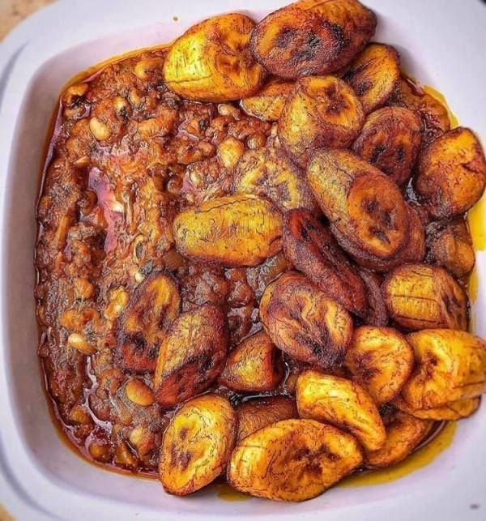

Beans

Description
A delicious and nutritious meal made from beans. It's simple to make and can be enjoyed with white rice or boiled yam.
Ingredients
- 3 cups of brown beans (oloyin or milk preferred)
- 1 bunch ripe plantains, peeled and cut into your preferred slices
- 2 large onions, chopped
- 2 tablespoons palm oil
- Salt and pepper to taste
- Water
Steps
- Add water to your pot and set it on fire.
- Prepare the beans by rinsing them thoroughly.
- Cook the beans until tender.
- Add the chopped onions and cook for a few minutes.
- Wait for about 40-45 minutes.
- In another pot, fry the plantains to your desired taste.
- Back to your beans, check if they are soft after 40-45 minutes.
- Add salt, palm oil, and pepper to taste.
- Wait for another 10-15 minutes, or until it reaches your desired taste.
- Serve very hot with your fried plantains.
Go back